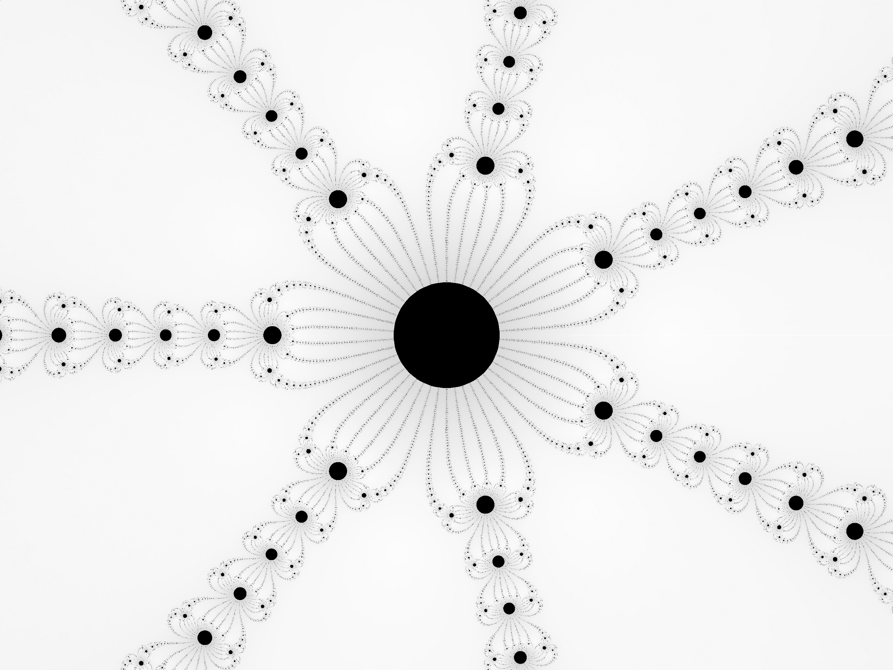

Newton Fractals can be made with a wide variety of equations. The following formula is a generalized version of the "classic" one that can use any power, along with perturbations of (a+bi) and (c+di):
